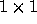
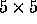
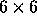
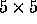
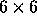

| Packets |
A factory produces products packed in square packets of the same height h
and of the sizes
 ,  ,
,  ,
,  ,  ,
 . These products are always delivered to customers in the square
parcels of the same height h as the products have and of the size
. Because of the expenses it
is the interest of the factory as well as of the customer to minimize the
number of parcels necessary
to deliver the ordered products from the factory to the customer. A good
program solving the
problem of finding the minimal number of parcels necessary to deliver the
given products according
to an order would save a lot of money. You are asked to make such a program.
,  ,
 . These products are always delivered to customers in the square
parcels of the same height h as the products have and of the size
. Because of the expenses it
is the interest of the factory as well as of the customer to minimize the
number of parcels necessary
to deliver the ordered products from the factory to the customer. A good
program solving the
problem of finding the minimal number of parcels necessary to deliver the
given products according
to an order would save a lot of money. You are asked to make such a program.
The input file consists of several lines specifying orders. Each line specifies one order. Orders are described by six integers separated by one space representing successively the number of packets of individual size from the smallest size to the biggest size . The end of the input file is indicated by the line containing six zeros.
The output file contains one line for each line in the input file. This line contains the minimal number of parcels into which the order from the corresponding line of the input file can be packed. There is no line in the output file corresponding to the last ``null'' line of the input file.
0 0 4 0 0 1 7 5 1 0 0 0 0 0 0 0 0 0
2 1